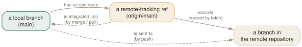

Day 05
Remotes
Another repository's branches, copied into yours as read-only bookmarks — and the two verbs that move them.
By the end of today you can
- explain the difference between
main,origin/mainand themainon the server, and which command moves each - read ahead/behind counts and decide how to integrate before anything changes
- push a new branch, set its upstream, and understand every rejection git gives you
Three mains, not one
A remote is another repository, and git never talks to it except when you ask. What you see of it in between is a set of remote-tracking refs — origin/main, origin/feature — which are your repository's snapshot of where the remote's branches were the last time you looked. So every shared branch has three pointers: your main, your origin/main, and the server's main. Each command today moves exactly one of them.
git clone sets all of this up. Look at what it wrote:
$ git clone -q origin.git bob && cd bob
$ git branch -r
origin/HEAD -> origin/main
origin/main
$ git for-each-ref refs/remotes
c4fc3f24017cde1f30aec6e574450f1b95a6ed14 commit refs/remotes/origin/HEAD
c4fc3f24017cde1f30aec6e574450f1b95a6ed14 commit refs/remotes/origin/main
$ git config --get-regexp '^(remote|branch)\.'
remote.origin.url /srv/git/origin.git
remote.origin.fetch +refs/heads/*:refs/remotes/origin/*
branch.main.remote origin
branch.main.merge refs/heads/main
Three pieces of config carry the whole mechanism. remote.origin.url is where. remote.origin.fetch is the refspec: every branch under the remote's refs/heads/ is copied to refs/remotes/origin/ here, and the + allows the copy to be updated even when that is not a fast-forward — when the server's branch was rewritten. And the two branch.main.* lines make origin/main the upstream of main — the default for pull, push, and the ahead/behind count.

fetch moves the bookmark, never your branch
Someone pushes. You fetch. Your branch, index and files stay exactly where they were:
$ git fetch
From /srv/git/origin
c4fc3f2..95e5378 main -> origin/main
$ git status -sb
## main...origin/main [behind 1]
The status line compares main with its upstream and counts commits on each side. After you commit locally too, the histories have diverged:
$ git branch -vv
* main 0ee97bb [origin/main: ahead 1, behind 1] Bob: add b
This is Day 4's situation with one branch on a server. The fix is Day 4's fix: git merge origin/main finds the merge base, combines the two changes, and makes a two-parent commit that contains both. Then push.
pull is fetch plus a decision
git pull runs git fetch and then integrates the upstream into the current branch. When your branch has not moved, integrating is a fast-forward and there is nothing to decide. When both sides have moved, there is, and an unconfigured git pull refuses to guess:
$ git pull
hint: You have divergent branches and need to specify how to reconcile them.
hint: You can do so by running one of the following commands sometime before
hint: your next pull:
hint:
hint: git config pull.rebase false # merge
hint: git config pull.rebase true # rebase
hint: git config pull.ff only # fast-forward only
...
fatal: Need to specify how to reconcile divergent branches.
This course picks the third: pull.ff set to only. git pull then fast-forwards when it can and stops, changing nothing, when it cannot — and you choose merge or rebase as a separate command, with the graph in front of you. It keeps the one surprising thing pull can do (create a commit you did not ask for, or rewrite ones you did) out of a command you type without thinking.
$ git pull
hint: Diverging branches can't be fast-forwarded, you need to either:
...
fatal: Not possible to fast-forward, aborting.
$ git log --oneline --graph --all # look first
$ git merge origin/main # then decide
push asks the server to fast-forward
git push sends your commits and asks the remote to move its branch to your tip. The remote agrees only if that is a fast-forward — if your tip contains everything its branch already had:
$ git push
! [rejected] main -> main (non-fast-forward)
error: failed to push some refs to '/srv/git/origin.git'
hint: Updates were rejected because the tip of your current branch is behind
hint: its remote counterpart. If you want to integrate the remote changes,
hint: use 'git pull' before pushing again.
Read that as “the server has commits you do not”. Fetch, integrate, push again. A new branch has no upstream yet, and the default push.default (simple) will not guess where it goes:
$ git switch -c topic # ...and commit something
$ git push
fatal: The current branch topic has no upstream branch.
To push the current branch and set the remote as upstream, use
git push --set-upstream origin topic
To have this happen automatically for branches without a tracking
upstream, see 'push.autoSetupRemote' in 'git help config'.
git push -u origin topic is the long answer. push.autoSetupRemote is the permanent one: a plain git push of a branch with no upstream pushes it to the same name and records the upstream.
$ git -c push.autoSetupRemote=true push
* [new branch] topic -> topic
branch 'topic' set up to track 'origin/topic'.
Keeping origin/* honest
Fetch adds and moves remote-tracking refs but, by default, never deletes them. A branch deleted on the server lives on in every clone as a stale origin/… until someone prunes:
$ git fetch
$ git branch -r
origin/HEAD -> origin/main
origin/main
origin/topic
$ git fetch --prune
- [deleted] (none) -> origin/topic
$ git branch -vv
* main 71c732e [origin/main] Merge remote-tracking branch 'origin/main'
topic 0561660 [origin/topic: gone] topic
fetch.prune makes every fetch prune. It only ever deletes refs/remotes/ entries; your local topic branch is untouched, and the gone marker tells you its upstream was deleted — usually because it was merged, which makes it a candidate for git branch -d.
Today's habit
Stop typing git pull by reflex. Type git fetch, read git status, and only then pull, merge or push. With today's config, git pull can no longer surprise you — but it is still better to know before you ask.
Tomorrow: reading the history you now share — who changed what, when, and why.
New vocabulary
Commands
| Command | Does |
|---|---|
git clone <url> | Copy a repository: all objects, its branches as origin/*, and one local branch checked out. |
git remote -v | List remotes with their fetch and push URLs. |
git remote add <name> <url> | Register another repository under a short name. |
git fetch | Download new objects and move the remote-tracking refs. Never touches your branches or files. |
git pull | Fetch, then integrate the upstream into the current branch. |
git push | Send the current branch's commits and move the branch of the same name on the remote. |
git push -u origin <branch> | Push and record origin/<branch> as this branch's upstream. |
git push origin --delete <branch> | Delete a branch on the remote. |
git branch -vv | List branches with their upstream and ahead/behind counts. |
Options
| Option | Does |
|---|---|
pull.ff | only: let git pull fast-forward and refuse anything else. |
push.autoSetupRemote | Make a plain git push of a new branch create it upstream and track it. |
fetch.prune | Delete remote-tracking refs whose branch was deleted on the remote, on every fetch. |
Today's configappend to ~/.gitconfig
pull only ever fast-forwards; merge-or-rebase stays a separate, deliberate command. Unset, git already refuses diverged pulls but nags about choosing a policy every time - this is that choice, written down, so a future default or someone else's dotfile cannot change what pull does to you.
[pull]
ff = only
The first push of a new branch works and sets its upstream, instead of failing with 'has no upstream branch'. Stale origin/* refs for branches deleted on the server disappear on the next fetch instead of accumulating.
[push]
autoSetupRemote = true
[fetch]
prune = true
git reads its config afresh on every command, so there is nothing to reload. Check what is in force, and which file it came from, with git config list --show-origin.
Drillsdo these in a real terminal, today
Self-check
Answer out loud first, then unfold.
You run git fetch, and git log still does not show your colleague's new commit. Did the fetch fail?
No. The commit arrived, and origin/main moved to it; your main did not, because fetch never moves local branches. git log origin/main shows it, and git status now says you are behind. Moving main is a separate step: a merge, a fast-forward pull, or (Day 9) a rebase.
git push is rejected as “non-fast-forward”. A colleague suggests git push --force. What would that do to the server?
Move the server's main to your commit regardless, making your colleague's commits unreachable from it — they vanish from the branch for everyone who fetches next. The rejection is git telling you that the server has commits you do not.
The right move is to fetch, integrate (merge today, rebase on Day 9), and push a commit that contains both histories. Day 9 also covers --force-with-lease, for when rewriting the remote branch really is the intent.
Your laptop's git branch -r lists thirty branches, but the server only has five. Where did the other twenty-five come from?
They are remote-tracking refs for branches that were deleted on the server after you last fetched them. A plain git fetch adds and updates origin/* refs but does not remove them. git fetch --prune (or fetch.prune set to true) deletes the ones with no branch behind them. Your own local branches are not touched; ones that tracked a pruned branch show [origin/x: gone] in git branch -vv.
With pull.ff = only, git pull refuses: “Not possible to fast-forward, aborting.” Your colleague's git pull never refuses. Whose setup is better?
It depends on what you want pull to decide for you. Yours stops whenever both sides have new commits and hands the decision back: git merge or git rebase, explicitly, after you have looked at git log --oneline --graph --all.
Your colleague has pull.rebase set — to true (rebase) or false (which means merge) — so their pull silently does one or the other. That is fine if they chose it; it is how unintended merge commits and surprise rebases end up in a shared history when they did not.
Cheat sheet
# main your branch; moved by commit, merge, pull
# origin/main last-seen copy of the server's main; moved by fetch
git fetch # safe, always: objects + origin/* only
git status -sb # ## main...origin/main [ahead 1, behind 2]
git branch -vv # every branch, its upstream, ahead/behind
git merge origin/main # integrate after a fetch
git pull # fetch + integrate (ff only, with today's config)
git push # server moves its branch only on a fast-forward
git push -u origin B # first push; records the upstream
git fetch --prune # drop origin/* for branches deleted upstream
Everything through Day 05
Commands
| Command | Does |
|---|---|
git init -b main | Create an empty repository whose first branch is main. |
git hash-object <file> | Print the object name the file's contents would get. Writes nothing without -w. |
git cat-file -t <object> | Print an object's type: blob, tree, commit or tag. |
git cat-file -p <object> | Pretty-print an object's contents. The one command that shows what git really stores. |
git cat-file -s <object> | Print an object's size in bytes. |
git ls-tree -r <tree-ish> | List every blob in a tree, recursively, with mode and hash. |
git rev-parse HEAD | Turn a name into the full hash it currently means. |
git count-objects -v | Count loose and packed objects and the disk they use. |
git status -s | Show each changed path with two columns: index vs HEAD, then working tree vs index. |
git add <path> | Copy the file's current contents into the index. Writes the blob immediately. |
git add -p | Walk through each hunk and choose which ones go into the index. |
git diff | Show what differs between the index and the working tree — what add would stage. |
git diff --staged | Show what differs between HEAD and the index — what commit would record. |
git restore <path> | Overwrite the working-tree file with the index version. Discards unstaged edits. |
git restore --staged <path> | Reset the index entry to HEAD's version. The working tree is untouched. |
git commit [-a] | Turn the index into a tree, wrap it in a commit, move the branch to it. -a first stages every modified tracked file (never untracked ones). |
git rm --cached <path> | Remove a path from the index only; the file stays on disk, now untracked. |
git branch | List local branches; * marks the one HEAD names. |
git branch -v | List branches with the commit each points at and its subject line. |
git branch <name> | Create a branch at HEAD without switching to it. |
git switch <branch> | Point HEAD at a branch and update the index and working tree to its commit. |
git switch -c <name> | Create a branch at HEAD and switch to it in one step. |
git switch - | Switch back to the branch you were on before. |
git switch --detach <commit> | Point HEAD directly at a commit, with no branch in between. |
git branch -d <name> | Delete a branch, refusing unless it is merged into its upstream (or into HEAD, if it has none). |
git branch -D <name> | Delete a branch unconditionally. |
git branch -m <old> <new> | Rename a branch. |
git merge <branch> | Bring the branch's history into the current one: fast-forward if possible, else a merge commit. |
git merge --ff-only <branch> | Merge only if it is a fast-forward; otherwise refuse and change nothing. |
git merge --no-ff <branch> | Always create a merge commit, even when a fast-forward was possible. |
git merge --abort | Give up a conflicted merge and restore the state before it started. |
git merge-base A B | Print the best common ancestor of two commits — the version a merge compares against. |
git ls-files -u | List the unmerged index entries: one line per stage per conflicted path. |
git show :1:<path> | Show the base version of a conflicted file. :2: is yours, :3: theirs. |
git checkout --conflict=merge <path> | Recreate the conflict markers in a file you mangled; =zdiff3 works too. |
git clone <url> | Copy a repository: all objects, its branches as origin/*, and one local branch checked out. |
git remote -v | List remotes with their fetch and push URLs. |
git remote add <name> <url> | Register another repository under a short name. |
git fetch | Download new objects and move the remote-tracking refs. Never touches your branches or files. |
git pull | Fetch, then integrate the upstream into the current branch. |
git push | Send the current branch's commits and move the branch of the same name on the remote. |
git push -u origin <branch> | Push and record origin/<branch> as this branch's upstream. |
git push origin --delete <branch> | Delete a branch on the remote. |
git branch -vv | List branches with their upstream and ahead/behind counts. |
Options
| Option | Does |
|---|---|
user.name / user.email | Set the identity written into every commit's author and committer lines. |
init.defaultBranch | Name the first branch of every new repository. |
commit.verbose | Show the staged diff below the message in the commit editor. |
branch.sort | Set the default order of git branch; -committerdate puts recent work first. |
merge.conflictStyle | Choose the marker style: merge (default), diff3 or zdiff3. |
pull.ff | only: let git pull fast-forward and refuse anything else. |
push.autoSetupRemote | Make a plain git push of a new branch create it upstream and track it. |
fetch.prune | Delete remote-tracking refs whose branch was deleted on the remote, on every fetch. |